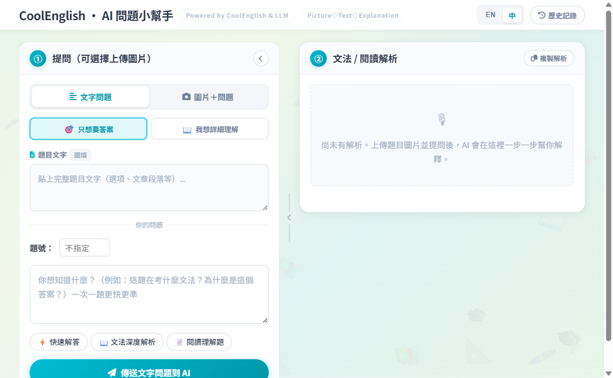
CoolTutor AI
面向英語學習者的 AI 家教工具，支援語法說明、學習引導與互動練習。
An AI tutoring interface for English learners, built for grammar explanation, guided support, and interactive practice.
應用語言學實務研究者｜中英雙語教師
Applied Linguist | Bilingual Educator | Researcher
英國愛丁堡大學應用語言學碩士（Merit），專長語料庫語言學、社會語言學與二語習得。七年英語教學經驗，致力於將語言學研究轉化為高效能教學實踐。
MSc Applied Linguistics (Merit) from University of Edinburgh. Specializing in corpus linguistics, sociolinguistics, and SLA. 7 years English teaching experience bridging research and pedagogy.
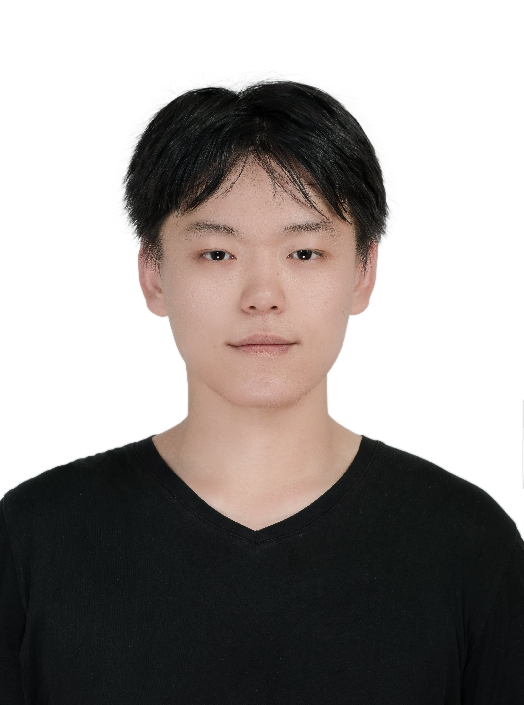
橫跨學術研究與實務教學的語言教育專家
Bridging academic research and language pedagogy
全心投入語言教學及研究的華語和英語老師。英語教學經驗七年，教學對象涵蓋國中到成人；內容從基礎文法到學術寫作到證照考試；除現場教學亦參與編撰題目、教學軟體SaaS 設計、AI 融入語言教/學。年輕有活力且負責任，教學注重互動及口說，並自編文法生詞整理教材。
A dedicated Chinese and English language teacher with seven years of experience teaching students from junior high to adults. Expertise ranges from basic grammar to academic writing and test preparation (TOEIC, IELTS). In addition to teaching, also skill at material editing as well as web-based tools (SaaS) designs and programming with AI tools. Young, energetic, and responsible, with a focus on interactive speaking activities and self-developed teaching materials.
我希望將最適合學生的語言學理論與教學方法結合，為學生提供高效且有趣的學習體驗。今年於中央大學探索英文為授課語言（EMI）與問題導向學習（PBL）的結合；於台灣師範大學研究 AI 融入語言教學以及網頁軟體電腦輔助語言教學 (CALL)。
I aim to integrate suitable linguistic theories with teaching methodologies to provide efficient and enjoyable learning experiences. Currently exploring the integration of English as a Medium of Instruction (EMI) and Problem-Based Learning (PBL) at National Central University. Working on computer assisted language learning (CALL) in National Taiwan Normal University with a view to integrating AI in language learning and teaching.
畢業等級：優良 (Merit)
論文：台灣2030雙語政策的語言意識形態研究（獲高度評價畢業論文獎）
專修：語料庫輔助論述分析、社會語言學、二語習得
成果：論文成果於 Bilingual Matters Symposium 2025（愛丁堡，線上）發表
Degree Classification: Merit
Dissertation: Language Ideologies toward Taiwan's 2030 Bilingual Policy
Award: Highly Commended Dissertation Award
Focus: Corpus-assisted discourse analysis, sociolinguistics, SLA
Outcome: Presented at Bilingual Matters Symposium 2025 (Edinburgh, virtual)
現代語言學系交換；西班牙語言與文化研習
成果：西班牙文 A2，累積跨文化學習經驗
Exchange in the Modern Languages department; Spanish language and cultural studies
Outcome: Spanish A2 and cross-cultural learning experience
GPA: 4.25/4.3（全系第一畢業；書卷獎 x6）
雙專長：華語文教學學分學程（2025年取得教育部對外華語教學能力證書）
榮譽：斐陶斐榮譽學會會員 (Phi Tau Phi)
GPA: 4.25/4.3 (Top graduate of the department; Dean's List x6)
Minor: Teaching Chinese as a Second Language (TCSL Certificate)
Honors: Phi Tau Phi Scholastic Honor Society
融入問題導向教學（PBL）於 EMI 課程「線性系統」，提升學生英語學術口說與自信（NTD. 500,000，進行中）。
Incorporating Problem-Based Learning (PBL) into the EMI course "Linear System" to improve students' academic English speaking and confidence (NTD. 500,000, ongoing).
規劃 3 個月、10 人班的多益 700 分衝刺課程。
Planned a 3-month TOEIC 700-point intensive course for a 10-person corporate class.
線上 / 實體整合式英文課程（詞彙、寫作、閱讀、文法、多益），單場線上課程最多 80 人、實體 30 人同步；自編整合式教材。
Online and in-person integrated English courses (vocabulary, writing, reading, grammar, TOEIC), with up to 80 online and 30 in-person students per session; self-developed materials.
設計、建置與維護國教署酷英(CoolEnglish)英語線上學習平台大專部課程；開發 20+ 個 AI 語言學習工具（CoolTutor AI、Qgen AI、ESL Material Studio、Essay Marking 等），每月服務 10,000+ 名學習者。
Designing, building and maintaining university-level courses for the MOE CoolEnglish platform; developed 20+ AI language-learning tools (CoolTutor AI, Qgen AI, ESL Material Studio, Essay Marking, etc.) serving 10,000+ learners per month.
AI in Education1v1-1v5英語口說課程；針對學生需求設計證照家教課程。
Small group speaking courses (1v1 to 1v5); customized certification exam preparation.
結合語言教學、測驗生成與即時回饋的網頁工具
Language-learning products that connect pedagogy, assessment, and AI feedback

面向英語學習者的 AI 家教工具，支援語法說明、學習引導與互動練習。
An AI tutoring interface for English learners, built for grammar explanation, guided support, and interactive practice.
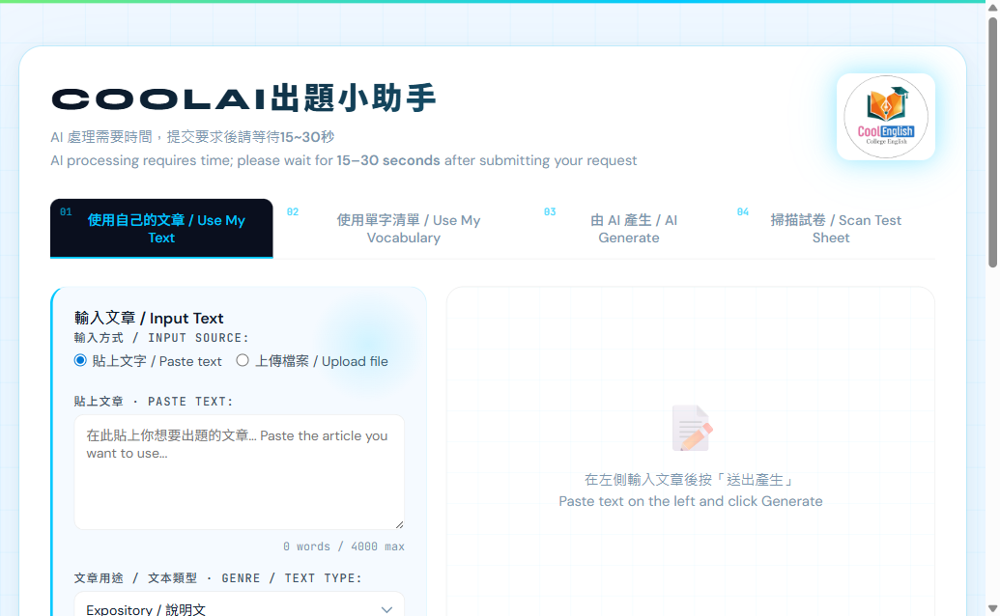
協助教師從閱讀文本快速生成題目、選項與教學活動，降低備課負擔。
A question-generation tool that helps teachers turn reading texts into assessment items and classroom activities.
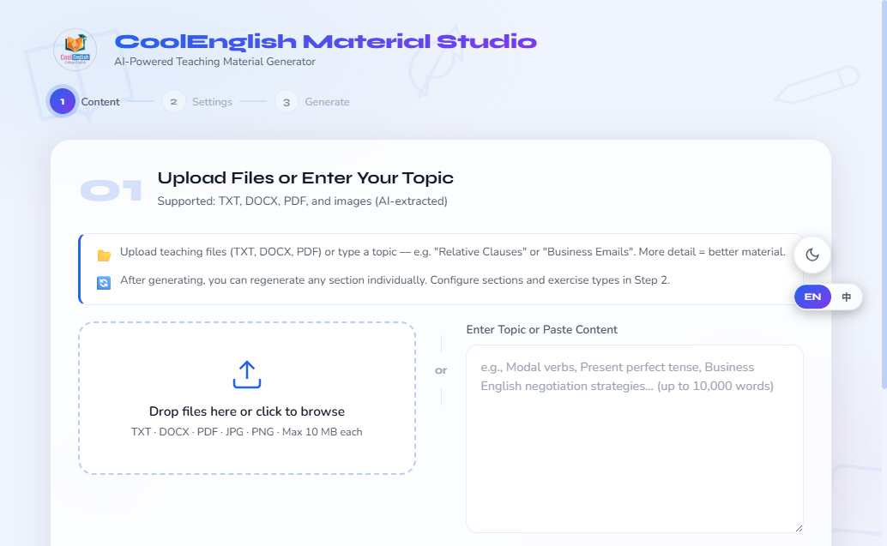
AI 教材產生器，可由檔案或主題生成課堂講義、練習活動與教師可編輯素材。
An AI-powered teaching material generator that turns files or topics into handouts, exercises, and editable classroom resources.
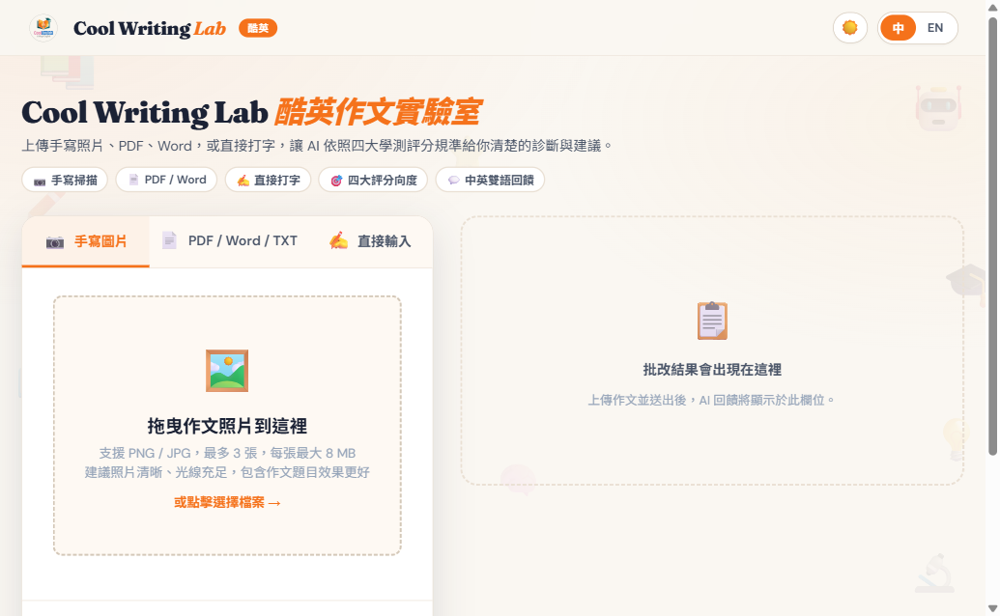
支援手寫作文、PDF、Word 與直接輸入，提供 AI 作文診斷與中英雙語回饋。
A writing feedback platform that supports handwritten essays, PDF/Word uploads, direct input, and bilingual diagnostic feedback.
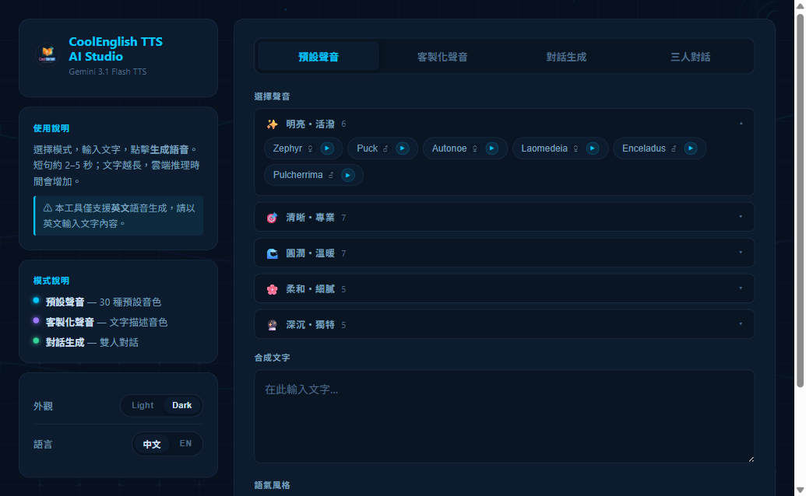
使用 Gemini Flash TTS 生成英語語音，支援多種聲線、客製化語音與對話生成。
A Gemini Flash TTS studio for English audio generation, with multiple voices, customized narration, and dialogue output.
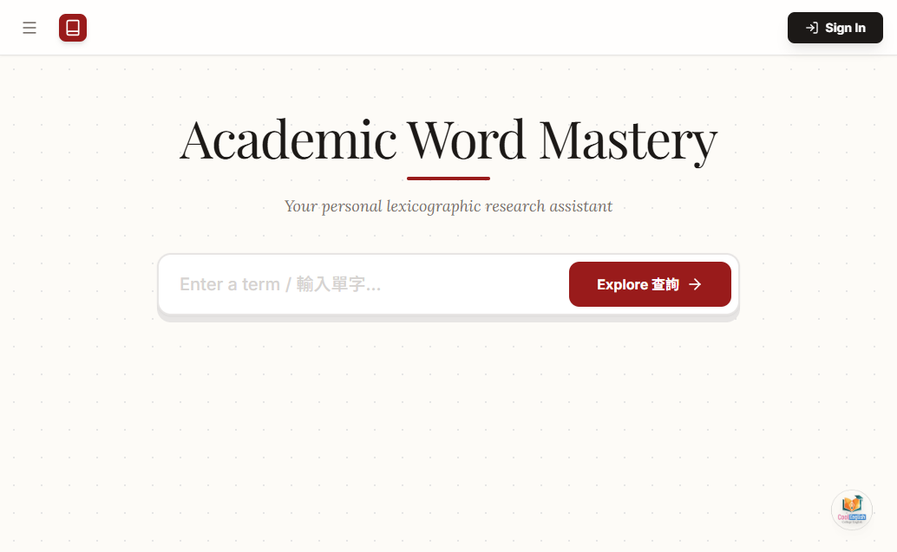
學術詞彙與搭配詞查詢工具，協助學習者探索詞彙用法與寫作搭配。
A lexicographic research assistant for academic vocabulary, collocations, and writing-oriented word use.
Liang, M.-Y., Wang, C.-C., & Lee, S. (2026). Styles and stereotypes: English and translingual practices in the neoliberal era. Applied Linguistics Review. https://doi.org/10.1515/applirev-2024-0193
Examining public and teacher perceptions of Taiwan's bilingual policy using corpus-assisted discourse analysis and ethnographic interviews.
Learner corpus-based study on Chinese connective acquisition (Co-authored with Li, M.-Y.).
Analysis of internet slang and translingual practices in digital communication (Co-authored with Liang, M.-Y., & Li, S.N.).
研究之餘，探索世界的每一個角落
Exploring the world beyond research and teaching
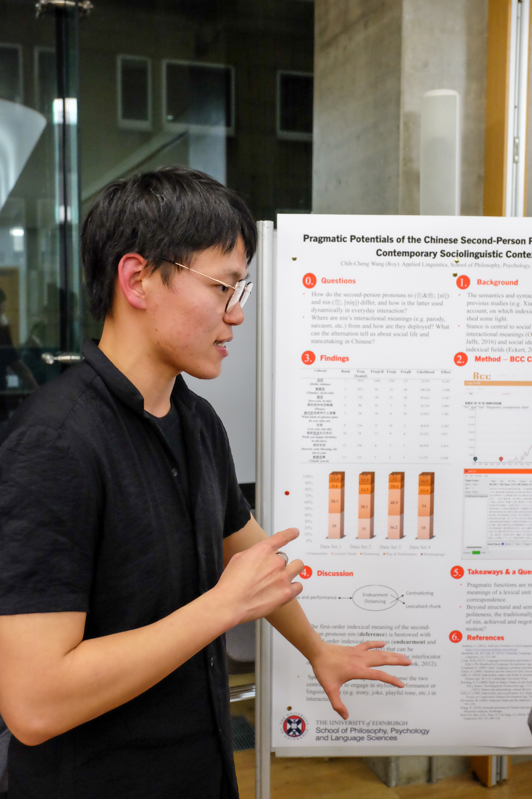
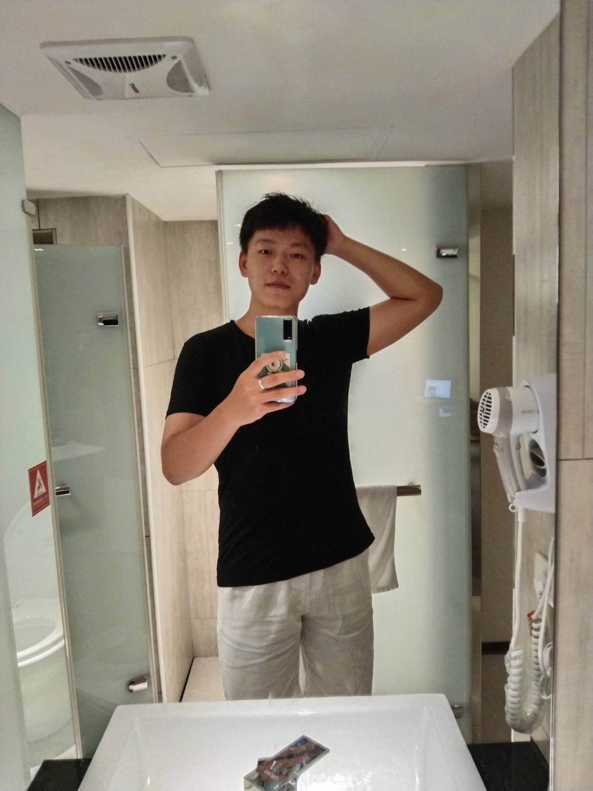
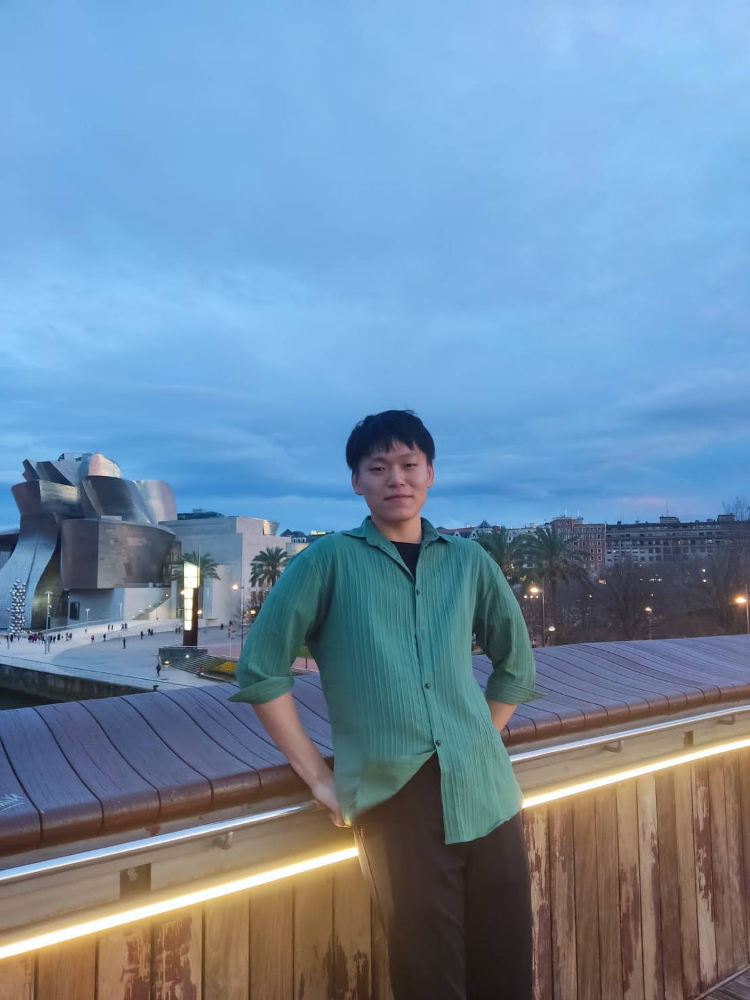
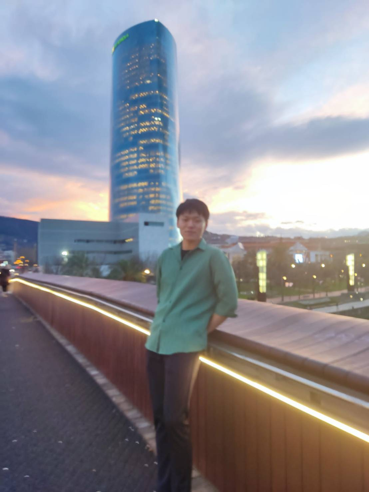
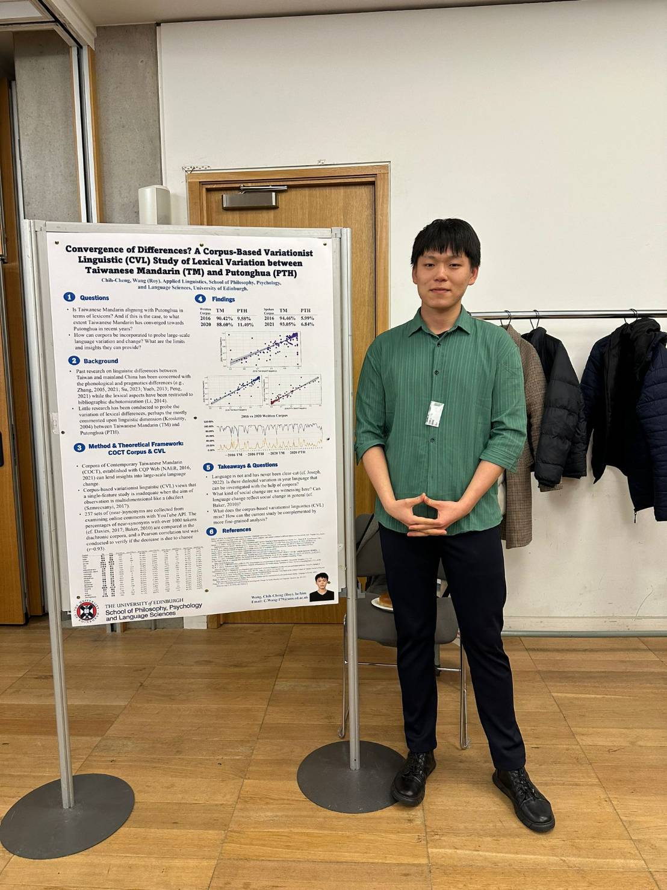
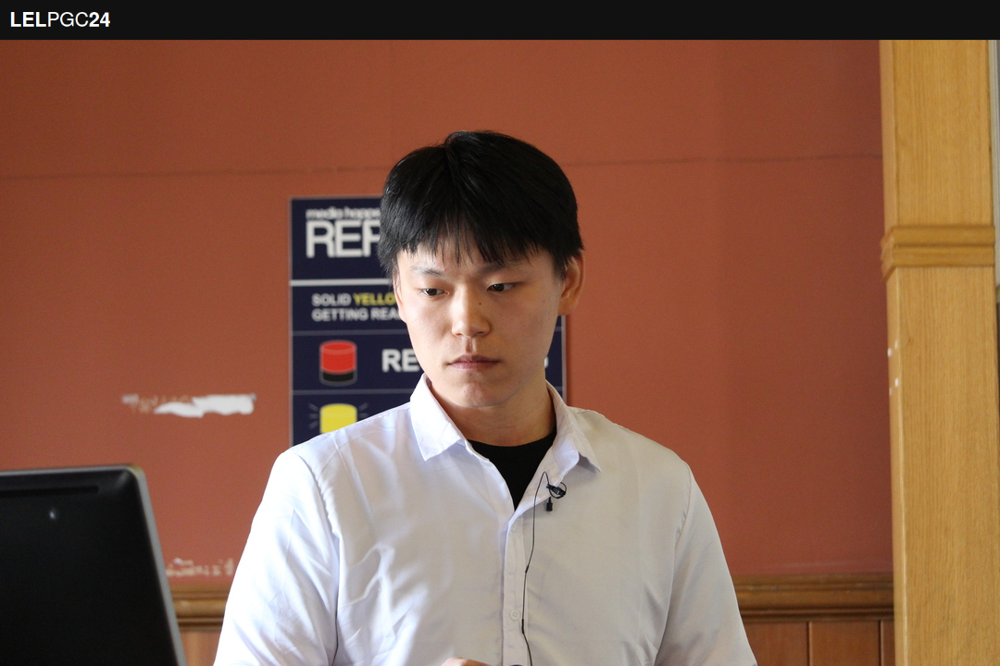
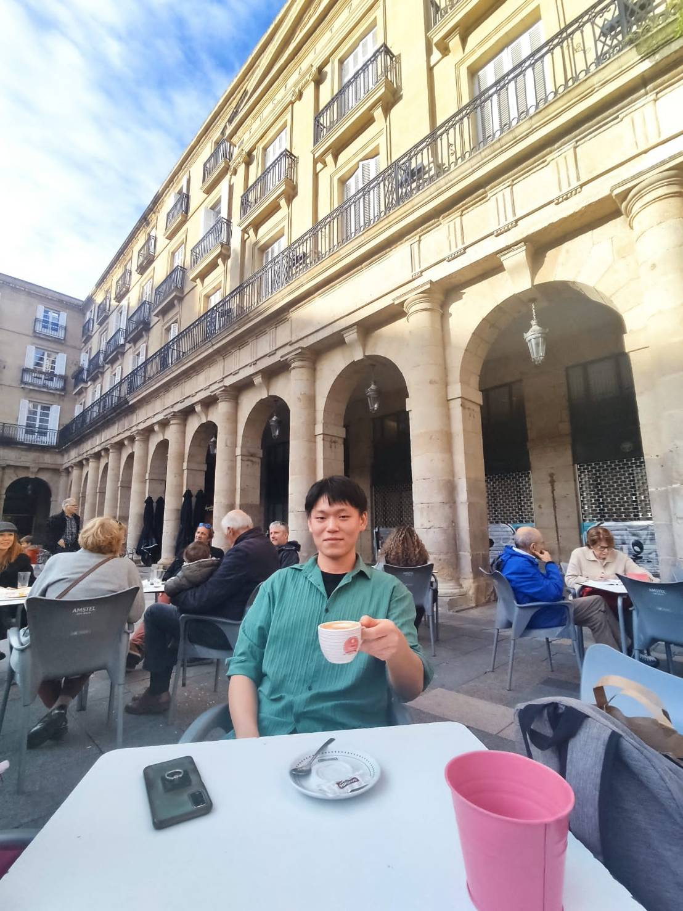
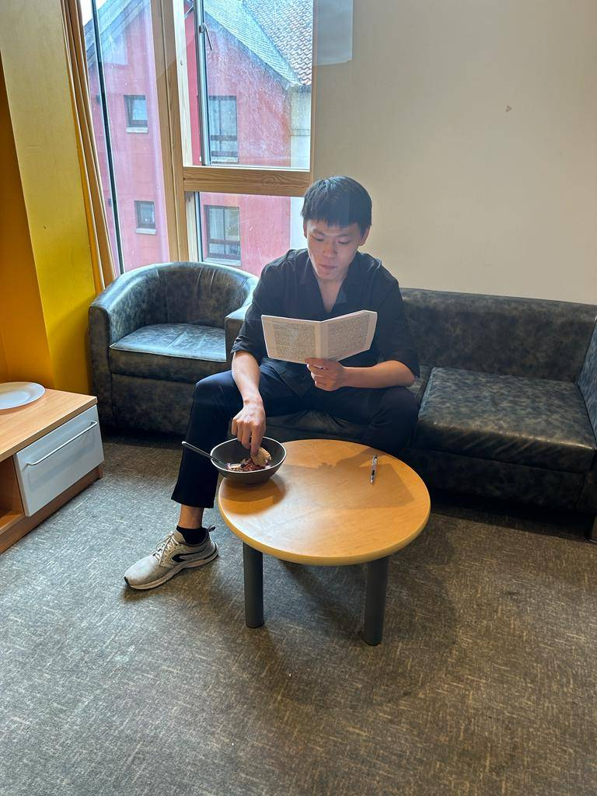
點擊線上檢視完整文件（僅供瀏覽）
Click to view full documents (view only)
期望將學術專業與教學熱誠貢獻於貴單位
Ready to contribute academic expertise and teaching passion to your institution